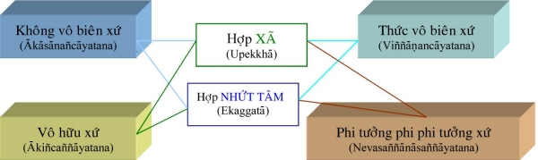
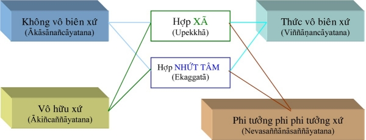

|
PHẬT GIÁO NGUYÊN THỦY THERAVÀDA VI DIỆU PHÁP BAN HOẰNG PHÁP |
|
BuddhaSasana Home Page |
Vietnamese, with Unicode VU Times or CN-Times font |
|
|
PHẬT GIÁO NGUYÊN THỦY THERAVÀDA VI DIỆU PHÁP BAN HOẰNG PHÁP |
|
Xin lưu ý: Cần có phông UnicodeViệt-Phạn VU Times hay CN-Times cài vào máy để đọc các chữ Pàli. |
|
BÀI 9. TÂM VÔ SẮC GIỚI Tâm vô sắc giới là tâm thuộc về lãnh vực vô sắc, vì tâm này vượt ra ngoài phạm vi sắc pháp nghĩa là đối tượng của những tâm này thuộc về phạm vi tâm pháp và chế định. Những tâm vô sắc cũng là những tâm thiền như tâm sắc giới, nhưng trạng thái những tâm này cao hơn và mạnh hơn. Cần chú ý là những tâm vô sắc nầy đều có trạng thái cũng như chi thiền giống với tâm ngũ thiền sắc giới và khi tính về thứ bậc thì nó thường được tính chung với tâm ngũ thiền sắc giới. Tâm thiền vô sắc giới được phân làm ba loại: tâm thiện vô sắc giới, tâm quả vô sắc giới và tâm duy tác vô sắc giới. I. Tâm Thiện Vô Sắc Giới: Là tâm có kết quả sanh làm người cõi vô sắc. Những tâm nầy là những tâm thiền mà đối tượng là các đề mục suy diễn chứ không nương vào các đề mục sơ tướng bằng sắc pháp như những tâm sắc giới. Những tâm thiền vô sắc là những tâm thiền chứng đắc sanh khởi nơi phàm tam nhân và thánh quả hữu học. Tâm thiện vô sắc giới được chia làm 4 loại: 1.1) Tâm Thiện Không Vô Biên: Là tâm thiền vô sắc thành tựu chứng đắc với đối tượng "hư không là vô biên". Khi hành giả tu thiền sắc giới đã thuần thục, nếu vị nầy có đủ túc duyên, có tâm nhàm chán, xã ly sắc pháp với ý nguyện đạt đến bậc thiền vô sắc cao hơn thì vị nầy gom tâm định trên đề mục quang tướng thành tựu do thiền sắc giới. Khi chăm chú vào đề mục quang tướng ấy, thời một điểm sáng nhỏ như ánh sáng đom đóm sẽ xuất hiện từ đối tượng ấy. Khi ấy hành giả tập trung tư tưởng, muốn ánh sáng ấy lan tràn ra khắp hư không. Hành giả chú tâm như vậy cho đến lúc điểm sáng ấy chiếu diệu hòa đồng, chiếu khắp cả hư không. Hành giả cần nhớ là sự chiếu rọi hư vô vô biên đó chỉ là do sự tưởng tượng mà ra và được gọi là Kasiṇagghatimākāsā (hư không phát xuất từ đề mục hoàn tịnh). Từ đó, hành giả lấy đó làm đối tượng và niệm rằng " Ākāsa Ananto ... Ākāsa Ananto ... Ākāsa Ananto ... = hư không không bờ mé ... hư không không bờ mé ...". Suy niệm như vậy cho đến lúc hành giả định tâm hoàn toàn vào đề mục ấy, tức là đã chứng và trú tâm thiền này. Nếu muốn và đủ nghị lực, hành giả có thể luyện lên bậc thiền cao hơn. Nếu không, khi mệnh chung, hành giả sẽ sanh về cõi vô sắc giới thuộc cõi không vô biên. 1.2) Tâm Thiện Thức Vô Biên: Là tâm thiền vô sắc khi tu thiền lấy đề mục "thức là vô biên" làm đối tượng. Sau khi đã chứng trú thiền không vô biên, hành giả khởi một suy niệm khác, suy niệm này phủ nhận quan niệm "hư không là vô biên" (có thể nói đây là śuy niệm xét lại" so với suy niệm củ ở bậc thiền trước), hành giả chăm chú suy niệm rằng "Viññāṇaṃ ananto ... Viññāṇaṃ ananto ... Viññāṇaṃ ananto ... = thức là vô biên ... thức là vô biên ..." cho đến khi được hoàn toàn định tâm vào đề mục là hành giả đã chứng trú bậc thiền Thức (tâm) vô biên xứ. ( Thức vô biên xứ là tâm thiền xét lại tâm không vô biên; - hành giả bắt cảnh quá khứ, cảnh nội phần, vì xét lại tâm của chính mình đã chứng là lấy tâm không vô biên làm đối tượng, - hành giả bắt cảnh chơn đế vì bắt cảnh thức là vô biên. – thức ở đây chính là tâm – ở tâm không vô biên hành giả nghĩ rằng hư không không có bờ mé, còn ở thức vô biên hành giả lại nghĩ chính tâm là không bờ mé). Khi đã chứng được thiền thức vô biên, nếu muốn và đủ định lực hành giả có thể tiếp tục sang bậc thiền khác, nếu không, sau khi thọ nghiệp đã mản, hành giả sẽ được sanh vào từng thiền vô sắc, cõi thức vô biên. 1.3) Tâm Thiện Vô Sở Hữu: Là tâm thiền tu và chứng đắc với đề mục "Vô Sở Hữu" làm đối tượng. Sau khi đã chứng đắc thiền thức vô biên, hành giả khởi ý niệm "không có chi" làm đề mục, ý niệm này do tâm tạo ra chứ không phải chơn đế. Hành giả chu tâm suy niệm Ṅatthi kiñci ... Natthi kiñci ... Natthi kiñci ... = Không có chi ... không có chi" cho đến khi chứng trú và định tâm chuyên chú vào đề mục này. Khi đã chứng được bậc thiền này, nếu hành giả không tiến lên trạng thái cao hơn được thì lúc mệnh chung sẽ được sanh vào từng vô sắc, cõi vô sở hữu. (tâm thiền này cũng có tính cách phủ nhận nhưng không xét lại tâm thiền củ). Chữ Akiññāyatama được dịch là vô sở hữu xứ nghe không được ổn vì vô sở hữu có nghĩa là không có chi là của mình trong khi đúng nghĩa tiếng Pali có nghĩa là không có chi nên phải dịch là vô hữu xứ thì đúng hơn. 1.4) Tâm Phi Tưởng Phi Phi Tưởng: Là tâm thiền vô sắc được tu chứng với đề mục "chẳng phải tưởng, chẳng phải không có tưởng". Khi hành giả đã chứng đắc vô hữu xứ, hành giả quán xét lại tâm vô hữu xứ với quan niệm "phải, đúng là không có chi (hành giả nhìn nhận nó), nhưng hành giả ý thức rằng sự nhận thức không có chi tức là cũng có vậy". Do đó, hành giả suy niệm rằng: "Satametaṃ panitametaṃ ... Satametaṃ panitametaṃ ... pháp ấy tế nhị, vi tế lắm (nghĩa là xét lại chẳng phải có tưởng, chẳng phải không có tưởng)". Hành giả suy niệm như vậy cho đến khi tâm an trụ trên đối tượng suy diễn tức là được chứng đắc thiền phi tưởng phi phi tưởng. Chú ý: Tâm phi tưởng phi phi tưởng xét lại tâm vô hữu xứ (cảnh quá khứ) của chính mình đã đắc (cảnh nội phần); lấy tâm vô hữu xứ làm đối tượng (cảnh chơn đế), nhưng với quan niệm "xét lại" (chẳng phải tưởng, chẳng phải không có tưởng). Trái lại với tâm hữu xứ với quan niệm "cố quyết" là không có chi. Người thành tựu tâm thiện này sau khi tạ thế sẽ được sanh vào lảnh vực vô sắc, ở cõi phi tưởng phi phi tưởng. Tâm thiện thiền phi tưởng phi phi tưởng là bậc thiền cuối cùng của thiền vô sắc và cũng là bậc thiền cao nhất trong các tâm thiền hợp thế. Ghi chú: trong khi các tâm thiền sắc giới được phân biệt bởi các sở hữu tâm (Tầm, Tứ, Hỷ, Lạc, Ðịnh và Xã) thì các tâm thiền vô sắc giới được phân biệt bởi các đề mục thiền định. Thiền sắc giới được định danh bởi thứ bậc cao thấp còn thiền vô sắc giới được định danh bởi các đề mục quán tưởng trong khi tu luyện tuy rằng cũng có sự cao thấp giữa các bậc thiền. Tâm Thiện Vô Sắc Giới 
II. Tâm Quả Vô Sắc Giới Là tâm thành tựu do tâm thiện vô sắc giới. Giống như tâm quả sắc giới, tâm quả vô sắc giới làm nhiệm vụ tục sinh, hộ kiếp và tâm tử cho người vô sắc. Tương ưng với tâm thiện vô sắc, tâm quả cũng được chia làm 4 tâm. Tâm Quả Vô Sắc 
III. Tâm Duy Tác Vô Sắc: Là tâm thiền vô sắc được tu luyện bởi bậc tứ quả. Những tâm nầy chỉ có nơi vị A-La-Hán và không có tác năng tạo quả. Sở dĩ các vị A-La-Hán luyện thiền này vì dùng nó làm nền tảng, điều kiện để tiến nhập thiền Diệt (Nirodha Jhāna) chứ không vì do vô minh, tham ái, ... Tâm duy tác vô sắc cũng được phân làm 4 tâm thiền. Tâm Duy Tác Vô Sắc
-ooOoo-
Ðầu trang |
Mục lục
| 01
| 02
| 03
| 04
| 05
| 06
| 07
| 08
| 09 |
Chân thành cám ơn Bác sĩ Nguyễn Tối Thiện đã gửi tặng bản vi tính (Bình Anson, 10-2002).
[Trở
về trang Thư Mục]
updated: 24-08-2003